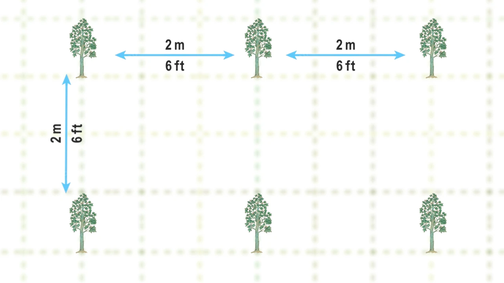

Sistemi sadnje
Generalno, preporučuje se 3 sistema za sadnju paulovnija.
1. Kvadratni sistem
Ovaj sistem je najjednostavniji i široko prihvaćen. Parcela je podeljena na kvadrate, a drveće je zasađeno na uglovima.
2. Pravougaoni sistem
Slično kvadratnom sistemu, ali sa pravougaonicima, omogućavajući više biljaka u nizu. Ima iste prednosti, ali može da primi više stabala na parceli.

3. Šestougaoni / Trougaoni sistem
Drveće je zasađeno na uglovima jednakostraničnih trouglova, formirajući šestouglove. Odgovara plodnim zemljama sa dovoljno vode. Iako može da posadi 15% više stabala, manje je usvojen zbog poteškoća u rasporedu i uzgoju.

Metoda za proračun broja sadnica
Kvadratni sistem sadnje:
U kvadratnom sistemu sadnje, broj sadnica se računa na osnovu broja redova i kolona. Svaki red sadrži jednak broj sadnica, a razmak između sadnica je jednak u oba pravca (X i Y). Da biste izračunali ukupan broj sadnica, koristite sledeću formulu:
totalTrees = Math.floor(landWidth / distanceX) * Math.floor(landHeight / distanceX)
Ova formula računa koliko sadnica staje u svaki red (na osnovu širine zemljišta i razmaka između sadnica), i koliko redova staje u dužinu zemljišta. Na kraju, rezultat se dobija množenjem broja sadnica po redu sa brojem redova.
Pravougaoni sistem sadnje:
Pravougaoni sistem sadnje je sličan kvadratnom, ali se vrednosti razmaka između sadnica (X) i razmaka između redova (Y) razlikuju. Broj sadnica se računa na sličan način:
totalTrees = Math.floor(landWidth / distanceX) * Math.floor(landHeight / distanceY)
Kao i kod kvadratnog sistema, formula računa koliko sadnica može stati u svaki red i koliko redova može stati na parcelu. Ova metoda je korisna kada su razmaci između sadnica različiti u zavisnosti od pravca.
Trougaoni sistem sadnje:
U trougaonom sistemu sadnje, sadnice se raspoređuju u trougaonim obrascima, što omogućava bolje iskorišćenje prostora i efikasniju sadnju. Formula za izračunavanje broja sadnica u ovom sistemu je složenija:
// Izračunavanje razmaka između redova na osnovu razmaka između sadnica
const rowSpacing = distanceX * 0.866; // distanceX i distanceY su jednaki
// Izračunavanje ukupnog broja redova
const totalRows = Math.floor((landWidth - distanceX) / rowSpacing) + 1;
// Izračunavanje broja sadnica u neparnim i parnim redovima
const plantsOddRow = Math.floor(landHeight / distanceX);
const plantsEvenRow = Math.floor((landHeight - (distanceX * 0.5)) / distanceX);
// Izračunavanje broja parnih i neparnih redova
const evenRows = Math.floor(totalRows / 2);
const oddRows = totalRows - evenRows;
// Izračunavanje ukupnog broja sadnica
totalTrees = (plantsOddRow * oddRows) + (plantsEvenRow * evenRows);
Ova formula prvo izračunava razmak između redova na osnovu razmaka između sadnica. Zatim računa koliko redova može stati u širinu parcele, kao i broj sadnica u neparnim i parnim redovima. Na kraju, sve se sabira kako bi se dobio ukupan broj sadnica.
Dodatna teorija za kvadratni i pravougaoni sistem sadnje:
Da biste izračunali koliko je sadnica potrebno za vaš pejzažni projekat, kalkulator izračunava koliko sadnica može stati u svaki red i u svaku kolonu:
Plants per row = Width / Plant spacing
Plants per column = Length / Plant spacing
Kalkulator zatim izračunava ukupan broj sadnica množenjem ovih vrednosti:
Total number of plants = Plants per row × Plants per column
Važno je napomenuti da mnogi online kalkulatori koriste sledeću formulu:
Total number of plants = Area of garden / Plant spacing^2
Ova formula nije ispravna jer ne uzima u obzir da sadnice moraju biti postavljene u redove i kolone. Naš kalkulator to precizno uzima u obzir i daje tačan broj sadnica.
Dodatna teorija za triangularni sistem sadnje:
U triangularnom sistemu sadnje, sadnice su postavljene na uglovima jednakostraničnih trouglova, što omogućava bolje iskorišćenje prostora u poređenju sa kvadratnim ili pravougaonim rasporedom. Ovaj sistem je posebno koristan u vinogradima, voćnjacima i ukrasnim baštama gde je važno optimalno iskorišćenje prostora i estetski izgled.